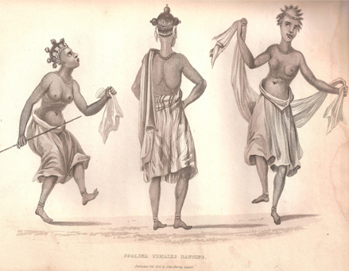

2. The Perception of African Oral Literature
Nineteenth-century approaches and collections. Speculations and neglect in the twentieth century. Recent trends in African studies and the revival of interest in oral literature.
A considerable amount of work has been published on the subject of African oral literature in the last century or so. But the facts are scattered and uneven, often buried in inaccessible journals, and their significance has not been widely appreciated. The popular image of Africa as a land without indigenous literary traditions retains its hold; even now, it is still sometimes expressed in a form as crude as that criticized by Burton a century ago:
The savage custom of going naked’, we are told, ‘has denuded the mind, and destroyed all decorum in the language. Poetry there is none …. There is no metre, no rhyme, nothing that interests or soothes the feelings, or arrests the passions …
(Burton 1865: xii)
Even those who would immediately reject so extreme a view are still often unconsciously influenced by fashionable but questionable assumptions about the nature of literary activity among non-literate peoples, which determine their attitude to the study of African oral literature. We still hear, for instance, of the ‘savage’ reliance on the ‘magical power of the word’, of the communal creation of ‘folktales’ with no part left for the individual artist, or of the deep ‘mythic’ consciousness imagined to be characteristic of non-literate society. All in all, there is still the popular myth of Africa as a continent either devoid of literature until contact with civilized nations led to written works in European languages, or possessing only crude and uninteresting forms not worthy of systematic study by the serious literary or sociological student.
In fact, there is a strong indigenous tradition of both unwritten and, in some areas, written literature in Africa.1 The oral literature in particular possesses vastly more aesthetic, social, and personal significance than would be gathered from most general publications on Africa. Far more, too, has been published on this subject than is usually realized even by many of the students who have recently taken some interest in the subject. But because much of the detailed research this century has been carried out by individuals working in isolation or, at best, by various schools of researchers out of touch with the work of other groups, the subject as a whole has made little progress over the last generation or so, whether in consolidating what is already known, in criticizing some of the earlier limiting preconceptions, or in publicizing the results to date.
This introductory chapter traces briefly the history of the study of African oral literature over the last century. The purpose of the chapter is twofold. First, there have been so many assumptions and speculations about both Africa and oral literature that it is necessary to expose these to clear the way for a valid appreciation of our present knowledge of the subject.2 Second, the various sources we have for the study of African oral literature need to be assessed and put in historical perspective. For though there are far more collections of African oral art than is usually realized, they are of very uneven quality and their usefulness depends on a knowledge of the theoretical preconceptions of the collector.
I
The European study of oral literature in Africa begins about the middle of the last century. There had been a few isolated efforts before then, notably Roger’s retelling of Wolof fables from Senegal (1828) and an increasing awareness of the written Arabic tradition. But until the mid-century there was no available evidence to refute the popular European image of Africa as totally without literary pretensions. By about the 1850s the position changed. African linguistic studies were emerging as a specialist and scholarly field, and this in turn led to a fuller appreciation of the interest and subtleties of African languages. The main motive of many of these linguistic studies was to aid the evangelization of Africa, and grammars, vocabularies, and collections of texts appeared by and for missionaries. There was close collaboration between linguists and missionaries, and many of the great collections of texts in the nineteenth century were a result of professional or amateur linguists working in full sympathy with the missionary movement and published under its auspices.3 A further stimulus was the general interest in comparative studies. This was revealed not only in linguistic work and in the comparative analysis of social and political institutions, but also in the field of literature: in the school of comparative mythology and in the impetus to collection arising from the publications of the Grimm brothers in Germany.
The result of these various influences was the publication of many lengthy collections of African texts and translations in the second half of the nineteenth century. 4 These contain narratives of various kinds (including stories about both animals and humans), historical texts, proverbs, riddles, vernacular texts describing local customs, sometimes additional vernacular compositions by the collector, and very occasionally songs or poems. There is of course some variation in size and quality, but by and large these editions compare favourably with many more recent publications. Most include complete texts in the vernacular with a facing translation usually into English or German, and occasionally a commentary (most often linguistic).
The main emphasis in these collections was, it is true, linguistic (or, in some cases, religio-educational, preoccupied with what it was thought fitting for children to know). There was little attempt to relate the texts to their social context, elucidate their literary significance, or describe the normal circumstances of their recitation. There are many questions, therefore, which these texts cannot answer. Nevertheless, the very size of many of these collections, presenting a corpus of literature from a single people, often throws more light on the current literary conventions among a given people than all the odd bits and pieces which it became so fashionable to publish later. And the linguistic and missionary motive was not always so narrow as to exclude all interest in the wider relevance of these collections. A number of scholars noted the connections between their work and the progress in comparative studies in Europe. Bleek, for instance, significantly entitles his collection of Hottentot stories Reynard the Fox in South Africa, to bring out the parallelism between African and European tales. Although at first some people refused to believe that tales of such striking similarity to European folk-stories and fairy-tales could really be indigenous to Africa, this similarity of content gradually became accepted. By the end of the century, Chatelain could assert with confidence in his authoritative survey that many myths, characters, and incidents known elsewhere also occur in African narratives, and that African folklore is thus a ‘branch of one universal tree’.5 The cultural implications of these collections were not lost on their editors. There was a general recognition, often accompanied by some slight air of surprise, that the negro too was capable of producing works which manifested depth of feeling and artistry and showed him to be human in the fullest sense of the word. Both the climate of opinion to which he felt he had to address himself and his own conclusions on the basis of his study of the language come out clearly in the preface to the early work by Koelle, African Native Literature, or Proverbs, Tales, Fables and Historical Fragments in the Kanuri or Bornu Language, published in 1854. It is illuminating to quote this eloquent and early statement at some length:
It is hoped that the publication of these first specimens of a Kanuri literature will prove useful in more than one way. Independently of the advantages it offers for a practical acquaintance with the language, it also introduces the reader, to some extent, into the inward world of Negro mind and Negro thoughts, and this is a circumstance of paramount importance, so long as there are any who either flatly negative the question, or, at least, consider it still open, ‘whether the Negroes are a genuine portion of mankind or not’. It is vain to speculate on this question from mere anatomical facts, from peculiarities of the hair, or the colour of the skin: if it is mind that distinguishes man from animals, the question cannot be decided without consulting the languages of the Negroes; for language gives the expression and manifestation of the mind. Now as the Grammar proves that Negro languages are capable of expressing human thoughts, —some of them, through their rich formal development, even with an astonishing precision—so specimens like the following ‘Native Literature’ show that the Negroes actually have thoughts to express, that they reflect and reason about things just as other men. Considered in such a point of view, these specimens may go a long way towards refuting the old-fashioned doctrine of an essential inequality of the Negroes with the rest of mankind, which now and then still shows itself not only in America but also in Europe (Chatelain 1894: 20. Chatelain’s introduction gives an excellent summary of the publications and conclusions on African oral literature to that date).
By the end of the century the same point could be stated more dogmatically and succinctly; as Seidel has it in his description of the impact of African oral literature, ‘Und alle sahen mit Erstaunen, dass der Neger denkt und fült, wie wir selbst.denken und fühlen’; (Seidel 1896: 3) but the point has been made—and often with a similar air of discovery—at intervals ever since. 6
The appreciation of the cultural relevance of the collected texts was taken further by the emerging tradition that a general study of any African people could suitably include a section on their unwritten literature. Even in the nineteenth century some general volumes appeared in which the literary creations of African peoples were set in the context of their life in general.7
One of the striking contributions of these early collectors—missionaries, linguists, ethnographers—is the frequent recognition that the texts they recorded could be truly regarded as a type of literature, fundamentally analogous to the written fiction, history, and poetry of European nations. This point is worth making. Recent scholars of the subject too often give the impression that they are the first to recognize the true nature of these texts as literature (although it must indeed be admitted that not only has it been difficult for this approach to gain popular acceptance, but for much of this century it has for various reasons been overlooked by professional students of Africa). Many of those working in this field in the nineteenth century, however, were quite clear on the point. The term ‘literature’ appears in the titles of books or sections,8 and Chatelain expressed a fairly common attitude among collectors when he stressed the importance of studying ‘their unwritten, oral literature’. (1894: 16).9 One of the earliest clear statements is that of Bleek in the preface to his famous collection of Namaqa Hottentot tales. These fables, he writes, form
[an] extensive … mass of traditionary Native literature amongst the Namaqa …. The fact of such a literary capacity existing among a nation whose mental qualifications it has been usual to estimate at the lowest standard, is of the greatest importance; and that their literary activity … has been employed almost in the same direction as that which had been taken by our own earliest literature, is in itself of great significance (Bleek 1864: xii–xiii).
By the end of the century, then, the subject was fairly well recognized by a limited group of scholars. A certain amount had been both recorded and published—in special collections, in general surveys of particular peoples, and as appendices and illustrations in grammatical works. Though few were working in this field, they tended to be in touch and to be aware of each other’s research, so that by the 1890s serious comparative and general accounts could be produced, drawing on the published works of others.10 It is true that a certain air of condescension was at times discernible; but this attitude in fact often seems less noticeable in these nineteenth-century sources than in many produced later. There was a general appreciation of the cultural implications of the studies: the fact that Africa could no longer be treated as an area totally without its own cultural traditions, that these could be looked at comparatively in the context of European as well as of African studies, and, finally, that the texts recorded by linguists, missionaries, and others could be treated as at least analogous to parallel written forms. Needless to say, this more liberal approach met with little popular recognition. The works were obscurely published and intended for specialist reading, and—perhaps even more important—the common myth that saw the African as uncultivated and un-literary was too firmly established to allow for easy demolition.11 But at least among a small group of scholars, in particular the German and English linguists, there was a sense that the subject had been established as one worthy of study and one which had even made a certain amount of progress.
This serious interest was consolidated by the group of German scholars working together towards the end of the nineteenth and during the first decades of the twentieth century—and also, to a lesser extent, later. Linguistic studies were considered to include African languages, and a series of specialist journals were published, some short-lived, others still continuing today, in which systematic work on various aspects of African languages, including oral literature, appeared.12 University chairs were established in Bantu or African languages (at Hamburg and Berlin) before any similar appointments in the English-speaking academic world.13 The linguistic interests of these scholars were by no means strictly limited to grammatical or syntactical analysis, but included both the recording of literary texts and a general appreciation of African literature as a suitable object of scholarship. Comparative surveys appeared which, though in some respects dated, are still among the best available.14 Drawing on the various published sources for African texts (both large and small), the authors called attention to the literary status of many of them, and pointed not only to the obvious prose forms recorded from Africa but also—a far less common recognition even now—to the various categories of poetry. Seidel, for instance, lists love songs, satirical songs, war songs, epic, dirges, religious songs, and didactic poems as among African literary forms, and even makes some attempt to discuss their formal structure (1896: 8ff.). To this general recognition of the subject was added a tradition of systematic empirical research. The extension of the German empire further stimulated the interest in African studies, and many texts were recorded and analysed by scholars publishing in German, above all in the areas under German rule—South-West Africa, German East Africa (covering Tanganyika and Ruanda-Urundi), Kamerun, and Togo.15 Between them these collectors recorded or discussed such forms as prose narratives, proverbs, riddles, names, drum literature, and, more unusually in the subject as a whole, different kinds of poems and songs, sometimes accompanied by the recording and analysis of the music, in keeping with the early German interest in ethnomusicology.16

Figure 6. ‘Jellemen’ praise singers and drummers, Sierra Leone (Alexander Gordon Laing Travels in the Timmannee, Kooranko and Soolima Countries, 1825).
As far as the sheer provision of basic sources goes, these German collections are among the most valuable, and their number and quality seem surprisingly underestimated by recent English-speaking writers. Even though their interests were primarily linguistic, and more purely literary or social aspects were little pursued, they established the subject as one worthy of serious study (thus demanding systematic empirical research) and recognized that the texts they recorded were a form of literature.
In the first couple of decades of the twentieth century the study of African oral literature could in some ways be said to have reached its peak as a recognized and closely studied academic subject. Then German interest in Africa waned with the loss of their imperial interests; a number of valuable studies continued to be made by German writers and to appear in scholarly German journals,17 but there was no longer the same stimulus to research and the solid foundations laid earlier were hardly built upon. To some extent the place of the Germans was taken by the South African linguistic school, where there is a strong tradition of informed research in a wide sense;18 and Werner’s work in England also resulted in some contact being kept between the German linguistic tradition and the very much weaker English school. 19 But in general German linguists became isolated from the French and English professional scholars who were now coming to the fore in African studies, concentrating more on aspects of social institutions than on linguistic matters. Much of the earlier ground was therefore lost, and until very recently the study of African oral literature has been relatively neglected as a subject of research in its own right.
II
Various factors have contributed to the relative lack of interest in oral literature in this century. To understand these, it is necessary to include some account of the history of anthropology, for during much of the first half of the twentieth century it was anthropologists who tended to monopolize the professional study of African institutions and culture. The various assumptions of anthropology in this period both directed research into particular fields and also dictated the selection of texts and the particular form in which they were to be recorded.
A number of the theories that held sway at this time were almost fatal to the serious study of oral literature. This so far had fortunately been free from over-speculative theorizing, for in spite of the dominance in some circles of Muller’s particular theories of ‘comparative mythology’, they seem to have had little effect on studies in the field; the general interest in comparison had thus acted more as a stimulus than as a strait jacket. But the rise first of the evolutionist and diffusionist schools and later of the British structural-functional approach resulted in certain definite limitations being placed on the study of oral art.20
The evolutionist approach to the study of society, so influential in the later nineteenth and early twentieth centuries, was a complex movement that took many different forms. Its central tenets, however, were clear. They included the belief in the concept of unilinear and parallel stages of social and cultural evolution through which all societies must pass; a concentration on the origins of any institution as being of the first importance; and, finally, the implicit and evaluative assumption that the direction of evolution was upwards—a progress from the crude communal stage of primitive life towards the civilized and differentiated culture of contemporary Europe. Speculative pseudo-history and totally unverified assumption were asserted as proven fact. Many generalizations too were authoritatively pronounced about how ‘primitive man must have felt’ or ‘probably imagined’, which drew on little more evidence than the writer’s own introspection or his belief that what he most valued in his own, civilized, society were just those elements surely lacking in primitive life. ‘Primitive’, furthermore, was interpreted to mean both early in history (or prehistory) and low and undeveloped generally in the scale of evolution. The stage of development attained by non-literate peoples could thus be equated and evaluated as the same as that once traversed by the prehistoric ancestors of European nations.
This approach clearly has implications for the study of oral literature and in the early twentieth century these were increasingly explored, mainly by scholars writing in England.21 The concentration was on the idea of origins and evolution: questions asked (and confidently answered) concerned which type of literature came first in the prehistory of man, the survivals into the present of more primitive stages of life and culture in the form of ‘folk literature’ or ‘folk-lore’, and the supposed nature of the early primitive stage, still allegedly that of present-day ‘savages’.
Current preconceptions about the nature both of oral literature and of primitive society could be fitted into this conceptual framework. Such literature was, for instance, supposed to be the work of communal consciousness and group authorship rather than, as in civilized communities, of an individual inspired artist; it was handed down word for word ‘from the dim before-time’ or ‘far back ages’, for no individual creativity or imagination could be expected of primitive peoples; it was basically similar among all peoples at the same stage of evolution, so that one could generalize about, say, ‘the primitive’ or ‘the African’ without having to consider the particular history or culture of a given area, much less the individual composer; and finally, although it might ultimately evolve into something higher, at the moment such oral literature was radically different from that of higher civilizations with their emphasis on originality, innovation, and the written word. The exact stage assigned to various non-literate peoples varied, but there was general agreement that most African peoples belonged to an early and low stage, and that their art, if any, would be correspondingly primitive. They were variously described as dominated by the idea of magic, by totemism, or by their failure to distinguish between themselves and the animal world round them. And all these ideas could be presumed to come out in their oral literature or ‘folk-lore’.
These theories were not in fact often applied in detail to African oral literature. Nevertheless, they had a direct effect on its study. First, the evolutionist movement gave an apparently ‘scientific’ validation to certain current prejudices about the nature of oral art which naturally affected the attitude of those working in the field (and has to some extent continued to do so, particularly among those with little first-hand knowledge of unwritten literature).22 It has also dictated the selection of oral literature recorded or the kind of interpretation thought suitable. Because such oral literature was ‘communal’, for instance, variant forms were not recorded or looked for and no questions were raised about individual authorship, which was presumed not to exist. Because items of oral literature could also be regarded as ‘survivals’ of yet more primitive stages, an acceptable interpretation would be in terms of hypothetical earlier customs, such as ‘primitive matriarchy’ or ‘totemism’, rather than of its literary effectiveness or acceptability. Because primitive tribes were supposed to be preoccupied with tradition rather than innovation, ‘traditional’ tales were sought and ‘new’ ones ignored or explained away. Because interest was focused on broad evolutionary stages, few questions were asked about the idiosyncratic history, culture, or literary conventions of a particular people. Finally because origins and early history assumed such importance in people’s minds, there was little emphasis on the contemporary relevance of a piece of literature, so there seemed every excuse for collecting and publishing bits and pieces without attempting to relate them to their particular social and literary context. The interest of anthropologists was turned away from the systematic collection or analysis of detailed literary texts and concentrated on generalized theory.
The main outlines and many of the details of this approach are now rejected by the majority of professional anthropologists as either false or unproven. But as it was not just a matter of esoteric academic interest but a reflection and apparent validation of many popular views, its rejection by professionals by no means implies the end of its influence. Many of these assumptions can still be found in the writings of non-anthropologists, in particular among some of the self-styled English ‘folklorists’. They have also been lent apparent support by the actual selection and treatment of societies presented to the public.
By the 1930s anthropologists were turning to more empirical and first-hand studies of African societies, with the consequent promise of more systematic collection of oral literature. The so-called structural-functional school of British anthropology, associated in its most rigid form with the name of Radcliffe-Brown, concentrated on function, in particular on the function of stabilizing or validating the current order of things. This approach was naturally applied to literature as to other social data. The idea that certain types of oral literature could have a utilitarian role was, of course, not new (e.g. Van Gennep 1910); nor was the related but more extreme hypothesis that, in contrast to the idea of ‘art for art’s sake’ supposedly characteristic of civilized nations, the oral literatures of Africa had a severely practical rather than aesthetic aim. But, while chiming in with these notions, structural-functional anthropology took a particular form of its own. Its central theoretical interest was, at root, the functional integration and maintenance of society: and items of oral literature were regarded as relevant only in so far as they could be fitted into this framework.
The fact that this approach has till recently held sway among British anthropologists—those who in other spheres have made the greatest contribution to the empirical study of African institutions—has several implications for the study of oral literature. Most important is the implicit assumption that oral literature is not worthy of study as a subject in its own right and that it can be ignored except for passing references which fit in with a particular interpretation of society. The result is that over the last generation or so practically no collections or analyses of oral literature have been made by British scholars. When oral literature was mentioned, the fashion was to play down the aesthetic aspect in favour of the functional and to stress ‘traditional’ material even to the extent of sometimes refusing to record anything that seemed to smack of innovation. Prose narrative was more often referred to than sung poetry, since it was easier to make a quick record of it and since it was more suitable, particularly in the form of ‘myths’, for use in functional analysis. Altogether the emphasis was on brief synopsis or paraphrase rather than a detailed recording of literary forms as actually delivered. The well-known British tradition of empirical and painstaking field work in Africa has therefore borne little fruit in the field of oral literature. And the dominance of this functional approach, following on the more speculative evolutionist framework of earlier years, helps to explain why the study of oral literature has made so little progress in this century.
The interest in diffusion—the geographical spread of items of material and non-material culture—has also had its repercussions. In both the nineteenth and the twentieth centuries, curiosity about the geographical origin and subsequent history of particular stories encountered in different parts of the world has been considerable. This has been most specifically expressed in the Scandinavian or ‘historical-geographical’ school of folklore, which for much of this century has been trying to discover the ‘life history’ of stories of various kinds, by means of systematic classification and an elaborate indexing of comparative references.23 This approach is also prevalent in America, where it has to some extent blended with the less ambitious and more liberal diffusionist approaches pioneered by Boas and his followers.24 It has had relatively few adherents in Britain, largely because of the dominance of the theories just described, but it has had some wider influence through its association with the international folklore movement.25
The main consequence of these diffusionist approaches was the focusing of interest on the subject-matter of oral literature—for it is this that must be considered when attempting to trace its historical and geographical diffusion.26 Detailed investigations of the actual social and literary role of forms of oral literature in particular cultures were thus not called for. Similarly there was no onus on collectors to provide laborious and detailed transcriptions when all that was needed was a synopsis of the content: unskilled assistants could be employed to write down ‘texts’ and summaries. The emphasis was naturally on prose tales whose motifs could be traced, and once again attention was focused away from poetry.
As a result of these varied theories there was a turning away from the more systematic and empirical foundations laid earlier in the century towards a more limited approach to the subject. Different as the theories are in other respects, they all share the characteristics of playing down interest in the detailed study of particular oral literatures and, where such forms are not ignored altogether, emphasize the bare outline of content without reference to the more subtle literary and personal qualities. In many cases, the main stress is on the ‘traditional’ and supposed static forms, above all on prose rather than poetry. The detailed and systematic study of oral literature in its social and literary context has thus languished for much of this century.
This is not to say that there were no worthwhile studies made during this period. A number of gifted writers have produced valuable studies, often the fruit of long contacts with a particular culture and area,27 and many short reports have appeared in various local journals. But with the exception of a handful of American scholars and of the well-founded South African school,28 most of these writers tended to work in isolation, their work not fully appreciated by scholars.
Another apparent exception to this general lack of concern with oral literature was the French interest associated with the négritude movement and the journal (and later publishing house) Présence africaine.29 But this, though profoundly important in influencing general attitudes to African art, was primarily a literary and quasi-political movement rather than a stimulus to exact recording or analysis. It rests on a mystique of ‘black culture’, and a rather glamorized and general view is put forward of the moral value or literary and psychological depth of both African traditional literature and its contemporary counterparts in written form. Thus, though a few excellent accounts have been elicited under the auspices of this movement, mainly by local African scholars,30 many of its publications are somewhat undependable as detailed contributions to the study of oral literature. Its romanticizing attitudes apart, however, this school has had the excellent effect of drawing interest back to the literary significance of these forms (including, this time, poetry). But it cannot be said that this interest did very much to reverse the general trend away from the recognition of African oral literature as a serious field of scholarship.
By the late 1950s and 1960s, however, the situation started to change. There was a rapidly increasing interest in African studies as a whole, expressed both in the recognition of Africa as a worthwhile field of academic study and in a marked proliferation of professional scholars concerned with different aspects of African life. Work became increasingly specialist. With the new boom in African studies, those who before were working in an isolated and limited way, or in only a local or amateur context, found their work gradually recognized. Some of the earlier work was taken up again,31 and the interests of certain professional students of Africa widened—not least those of British anthropologists, who for long had held a near monopoly in African studies but who were now turning to previously neglected fields. The result has been some renewal of interest in African oral literature, though—unlike most branches of African studies—it can hardly yet be said to have become consolidated as a systematic field of research.
To mention all the contributory streams in the present increasing interest in African verbal art would be tedious and nearly impossible. But certain of the main movements are worth mentioning, not least because each tends to have its own preconceptions and methods of research, and because in several cases groups are out of touch with others working on the same basic subject from a different viewpoint.
The musicologists represent a very different approach from all those mentioned previously. Though their primary interest is, of course, musical, this involves the recording and study of innumerable songs—that is, from another point of view, of poetry. It is true that the words of songs are not always recorded or published with the same meticulous care as the music itself. But in a number of cases the words do appear, and this approach has had the invaluable effect of drawing attention to the significance of poetic forms so neglected in most other approaches. The musicologists furthermore have provided a much needed corrective to earlier emphases on the traditional rather than the new and topical, by giving some idea of the great number of ephemeral and popular songs on themes of current interest. The African Music Society in particular, centred in Johannesburg, has built up a systematic and scholarly body of knowledge of African music, mainly that of southern and central Africa but with interests throughout the continent. Its main stimulus has come from Hugh Tracey, who has taken an interest in oral art as well as music for many years (e.g. Tracey 1929, 1933, 1948b), but its activities are now finding a wider audience not least through its issue of large numbers of records in the Music of Africa series.32 Altogether it can be said that the musicologists, and above all the African Music Society, have done more both to co-ordinate scientific study and to publicize the results in the field of sung oral literature than any other group in this century.
Another significant contribution is that made by a small group of American anthropologists working closely together, and publishing much of their work in the Journal of American Folklore, an academic publication which has taken an increasing interest in Africa in recent years.33 There has always been a tradition of serious interest in oral literature among American anthropologists,34 unlike the British, but this has recently gained further momentum and there are now a number of American scholars engaged in the serious study of African oral art.35 Their main field of interest is the southerly part of West Africa and they seem to have less acquaintance with the work, say, of the South African school; but their general aspiration is to establish the study of oral literature over the continent as a whole. This group has to some extent been influenced by the contributions of the historical-geographical school, but takes a wider approach and, consonant with its anthropological interests, is concerned not only to record oral art (including poetry) but also to relate it to its social context rather than just analyse and classify the types and motifs of narrative. They point out the importance of considering individual inspiration and originality as well as the ‘traditional’ ‘tribal’ conventions, the role of poet and audience as well as subject matter. Though they have not always managed to pursue these topics very far in practice, the points they make about the direction of further research are so valid and, at the same time, so unusual in the study of African oral literature that this group assumes an importance in the subject out of all proportion to its size.
Some of the most original work has come from the growing numbers of Africans carrying out scholarly analyses of oral literature in their own languages. These writers have been able to draw attention to many aspects which earlier students tended to overlook either because of their theoretical preconceptions or because they were, after all, strangers to the culture they studied. Writers like Kagame on Rwanda poetry, Babalola on Yoruba hunters’ songs, or, outstanding in the field, Nketia on many branches of Akan music and literature, have been able to explore the overtones and imagery that play so significant a part in their literature and to add depth through their descriptions of the social and literary context. They have been among the few scholars to pay serious and detailed attention to the role of the poet, singer, or narrator himself. Not all such writers, it is true, have been saved even by their close intimacy with language and culture from some of the less happy assumptions of earlier generalizing theorists. But with the general recognition in many circles of African studies as a worthwhile field of research, an increasing number of local scholars are both turning to detailed and serious analysis of their own oral literature and beginning to find some measure of encouragement for publication of their results.36 And it is from this direction above all that we can expect the more profound and detailed analyses of particular oral forms to come. 37
Other groups or individuals need only be mentioned briefly; many of them have mainly localized or idiosyncratic interests. The strong South African school has already been mentioned and continues to take an interest in oral literature (both prose and intoned praise poetry) in Bantu Africa as a whole. In the Congo a number of scholars have for some years been working closely together, though relatively little in touch with the work of other groups. They tend to concentrate on the provision and analysis of texts, some on a large scale, but with perhaps rather less concern for social background and imaginative qualities; there have, however, been a few striking studies on style, particularly on the significance of tone (e.g. Van Avermaet 1955). Swahili studies too continue to expand, mainly focused, however, on traditional written forms, with less interest in oral literature. Traditional written literature in African languages generally is gaining more recognition as a field of academic research; strictly, this topic is outside the scope of this book, but is none the less relevant for its impact on attitudes to indigenous African literature as a whole.
Oral literature, like any other, has been and is subject to all the rising and falling fashions in the criticism and interpretation of literature and the human mind. Thus with African literature too we have those who interpret it in terms of, for instance, its relevance for psychological expression,38 ‘structural characteristics’ beyond the obvious face value of the literature (sometimes of the type that could be fed into computers), its social functions,39 or, finally and most generalized of all, its ‘mythopoeic’ and profoundly meaningful nature.40 All these multifarious approaches, to oral as to written literature, can only be a healthy sign, even though at present there are the grave drawbacks of both lack of reliable material and lack of contact between the various schools.
All this has had its effect on the older established disciplines within African studies. The linguists, for instance, who have in any case been taking an increasingly systematic interest in Africa recently, have been widening their field to include a greater appreciation of the literary aspect of their studies.41 The British social anthropologists, influenced by increasing contacts with colleagues in France and America and by co-operation with linguists, are also beginning to take a wider view of their subject,42 and French scholars too have recently produced a number of detailed and imaginative studies.43 Besides these direct studies, there is a growing awareness by other groups of the significance of oral literature as an ancillary discipline: historians discuss its reliability as a historical source, creative writers turn to it for inspiration, governments recognize its relevance for propaganda or as a source in education.44 Much of this does not, perhaps, amount to systematic study of the literature as such—but it at least reflects an increasing recognition of its existence.
Figure 7. ‘Evangelist points the way’. Illustration by C. J. Montague of ‘Christian’ being given directions by a white missionary (with clothes to match), a favourite motif in late nineteenth and early twentieth-century perceptions. From the Ndebele edition of Bunyan’s Pilgrim’s Progress, 1902.
There are, then, growing signs of a fuller appreciation of the extent and nature of African oral literature. But even now it is only beginning to be established as a systematic and serious field of study which could co-ordinate the efforts of all those now working in relative isolation. The desultory and uneven nature of the subject still reflects many of the old prejudices, and even recent studies have failed to redress the inherited over-emphasis on bare prose texts at the expense of poetry, or provide any close investigation of the role of composer/poet and the social and literary background. The idea is still all too prevalent—even in some of the better publications—that even if such literature is after all worthy of study, this can only be so in a ‘traditional’ framework. The motive, then, for the study is partly antiquarian, and haste is urged to collect these items before they vanish or are ‘contaminated’ by new forms. These ‘new’ forms, it is frequently accepted without question, are either not significant enough in themselves to deserve record or, if they are too obvious to evade notice, are ‘hybrid’ and somehow untypical. How misleading a picture this is obvious when one considers the many topical songs recorded by, for instance, the African Music Society, the modern forms of praise poems or prose narratives, oral versions embroidered on Christian hymns, or the striking proliferation of political songs in contemporary Africa—but the old assumptions are still tenacious and time after time dictate the selection and presentation of African oral literature with all the bias towards the ‘traditional’. In keeping with this approach too is the still common idea that African literature consists mainly of rather childish stories, an impression strengthened by the many popular editions of African tales reflecting (and designed to take advantage of) this common idea. Even now, therefore, such literature is often presented and received with an air of condescension and slightly surprised approval for these supposedly naive and quaint efforts. Most prevalent of all, perhaps, and most fundamental for the study of African oral literature is the hidden feeling that this is not really literature at all: that these oral forms may, perhaps, fulfil certain practical or ritual functions in that supposedly odd context called ‘tribal life’, but that they have no aesthetic claims, for either local people or the visiting scholar, to be considered as analogous to proper written literature, let alone on a par with it. The idea continues to hold ground that it is radically different from real (i.e. written) literature and should even have its own distinctive name (‘folklore’ perhaps) to make this clear. The fact, however, that oral literature can also be considered on its own terms, and, as pointed out in the last chapter, may have its own artistic characteristics, analogous to but not always identical with more familiar literary forms, is neglected in both popular conceptions and detailed studies.
The poetic, the topical, and the literary—all these, then, are aspects which still tend to be overlooked. It is indeed hard for those steeped in some of the earlier theories to take full account of them. But what the subject now demands is further investigation of these aspects of African oral art, as well as the whole range of hitherto neglected questions which could come under the general heading of the sociology of literature; and a turning away from the generalized assumptions of earlier theoretical and romanticizing speculators and of past (or even present) public opinion.
Footnotes
1 Written literature, mainly on Arabic models, is further mentioned in Ch. 3; cf. also Ch. 7.
2 For more detailed accounts of the study of oral literature in general (usually under the name of ‘folklore’) see Thompson 1946; Jacobs 1966; Krappe 1930; Dorson, i, 1968; and the more general essays in von Sydow 1948.
3 On this period see Curtin 1965: 392ff.; Greenburg 1965: 432ff.
4 e.g. Casalis 1841 (Sotho), Koelle 1854 (Kanuri), Schlenker 1861 (Temne), Burton 1865 (a re-publication of the collections of others), Bleek 1864 (Hottentot), Callaway 1868 (Zulu), Steere 1870 (Swahili), Christaller 1879 (Twi), Bérenger-Féraud 1885 (Senegambia), Schon 1885 (Hausa), Theal 1886 (Xhosa), Jacottet 1895, 1908 (Sotho), Taylor 1891 (Swahili), Büttner 2 vols., 1894 (Swahili), Chatelain 1894 (Kimbundu), Junod 1897 (Ronga), Dennett 1898 (Fjort), Velten 1907 (Swahili). For further references to works currently considered relevant, see introductions to Chatelain 1894, Jacottet 1908; also Seidel 1896, Basset 1903.
5 Chatelain 1894, p. 20.
6 See e.g. McLaren 1917: 332 (‘how human the Bantu peoples are!’); Smith and Dale ii, 1920: 345 (‘man’s common human-heartedness is in these tales … across the abysses we can clasp hands in a common humanity’); Junod 1938: 57 (‘proof that the Umuntu has a soul, and that under his black skin beats a genuine human heart …’, cf. p. 83); etc.
7 e.g. Macdonald 1882 (Yao), Ellis, 1890 (Ewe) 1894 (Yoruba).
8 e.g. Koelle 1854; Macdonald 1882, i, Ch. 2 and pp. 47–57.
9 Cf. also Burton 1865, pp. xiiff; M. Kingsley in introduction to Dennett 1898, p. ix; Seidel 1896 (introduction); Cronise and Ward 1903, p. 4.
10 e.g. Chatelain’s introductory sections in 1894 and Seidel’s general survey in 1896. Cf. also Jacottet 1908 (introduction).
11 See Curtin 1965: 397.
12 Zeitschrift für afrikanische Sprachen (Berlin, 1887–90), edited by C. G. Büttner; Zeitschrift für afrikanische und oceanische Sprachen (Berlin, 1895–1903), edited by A. Seidel; Zeitschrift für Kolonial-Sprachen (Berlin), founded in 1910 and, under its present title of Afrika und Übersee, still in continuation (at some periods entitled Zeitschrift für Eingeborenen-Sprachen). Material on African literature is also included in Mitteilungen des Seminars für orientalische Sprachen zu Berlin (1989-), Zeitschrift für Ethnologic (Berlin, 1869-), and Anthropos (Salzburg, Vienna, and Fribourg, 1906-); cf. also Mitteilungen des Instituts für Orientforschung (Berlin, 1953-).
13 Pointed out by McLaren 1917: 330. Especially Seidel 1896, Meinhof 1911.
14 Especially Seidel 1896, Meinhof 1911.
15 See, among many others, Büttner 1888; Gutmann 1914, 1928, also 1909 and 1927, etc.; A. Seidel, ‘Sprichwörter der Wa-Bondei in Deutsch-Ostafrika’, ZAOS 4, 1898; 5, 1900, etc.; von Hornbostel 1909; Fuchs 1910; E. Bufe 1914; Hecklinger 1920/1; Ebding 1938 (not seen); and, with Ittmann 1955, 1956; Bender (not seen); Witte 1906, etc. (Ewe); Spiess 1918a, 1918b, 1919; Härtter 1902. German scholars also worked on Hausa and Kanuri in Northern Nigeria, e.g. Prietze 1904, 1916a, 1916b, 1917, 1918, 1927. 1931 (Hausa), 1914 (Kanuri), also 1915, 1930; Lukas 1935, 1937 (Kanuri). See also some of the collections mentioned above.
16 See discussion of this school in Nettl 1956, Ch. 3.
17 e.g. the work by Ittmann and Ebding on Duala and other Cameroons languages, or Dammann on Swahili; cf. also the rather different series of publications by Frobenius 1921–8.
18 Cf. The early university recognition of African languages ad Bantu studies generally, and in particular the influence of C. M. Doke, famous both a linguist and as collector and analyst of oral literature. The south Afircan journal Bantu Studies, later entitled African Studies (Johannesburg 1921-) is one of the best sources for scholarly and well-informed articles in English on oral literature (mainly but exclusively that of southern Africa).On the contribution of south African Universitie to linguistic studies see Doke in Bantu Studies 7, 1933, pp. 26–8.
19 Till recently, not very developed in England, especially as concerns the oral literature aspect. The School of Oriental Studies (later Oriental and African Studies) of the University of London, founded in 1916, was the main centre of what African linguistic studies there were, but in the early years the African side was little stressed. Some of the better of the articles on African oral literature produced in English on oral literature (mainly but not exclusively that of southern Africa). On the contribution of South African universities to linguistic studies see Doke in Bantu Studies 7, 1933, pp. 26–8.
20 For a fuller discussion of the effect of these theories on the interpretation of prose narratives, see Ch. 12.
21 e.g. such general works as J. A. MacCulloch The Childhood of Fiction: a Study of Folk Tales and Primitive Thought (1905), G. L. Gomme Folklore as an Historical Science (1908), A. S. MacKenzie The Evolution of Literature (1911—quite a perceptive account, in spite of its evolutionist framework, including some treatment of African oral literature), E. S. Hartland The Science of Fairy Tales (1891), J. G. Frazer Folklore in the Old Testament (1918), and (in some respects a later survival of evolutionist assumptions) Bowra 1962. Though the detailed theories differ considerably, all share the same basically evolutionist approach.
22 And not just those. See, for example, the contradictions Cope runs into in his otherwise excellent treatment of Zulu praise poetry because of his assumption (undiscussed) that ‘traditional literature’ must be due to ‘communal activity’ (compare pp. 24 and 33, also pp. 53–4, in Cope 1968).
23 e.g. Thompson 1955–8 for the best-known general reference work and, for African material, Klipple 1938 and Clarke 1958. Detailed comparative analyses of particular motifs or plots from African materials, mainly published in Uppsala (Studia ethnographica Upsaliensia), include Abrahamsson 1951; Tegnaeus 1950; Dammann 1961. Cf. also the South African branch of this school, e.g. Hattingh 1944 (AA 5. 356); Mofokeng 1955.
24 Cf. Boas’s early works on (mainly American-Indian) oral literature, and more recent work relevant to Africa by Herskovits (1936 and 1958) and Bascom (1964, etc.). Some of the best collections of African literature have been published by the American Folk-lore Society (Chatelain 1894, Doke 1927).
25 Cf. Thompson 1946, pp. 396ff.
26 Cf. the excellent critical accounts of this approach in von Sydow 1948, M. Jacobs 1966.
27 e.g. Equilbecq 1913–16, Junod 1912–13, Smith and Dale 1920, Rattray 1930, etc., Green 1948, Carrington 1949b, etc., Verger 1957. Cf. also the mammoth general survey by the Chadwicks (1932–40).
28 See particularly the many publications of Doke, and a series of valuable articles in Bantu Studies (later African Studies); there are also a number of as yet unpublished theses (especially Mofokeng 1955).
29 Paris, 1947-; cf. also many articles in Black Orpheus and some in the various IFAN journals; Senghor 1951, etc.; and generalized descriptions such as that in Jahn 1961, Ch. 5.
30 e.g. A. Hampaté Ba (Bambara and Fulani), G. Adali-Mortti (Ewe), Lasebikan (Yoruba), perhaps A. Kagame (Ruanda); cf. also the more general accounts by Colin 1957, Traoré 1958.
31 Notably the Chadwicks’ great comparative study of oral literature which had previously had surprisingly little impact on African studies.
32 See its journal, African Music (1954-), and the earlier Newsletter (1948-); a library of African music has been built up in Johannesburg; cf. also the work of such scholars as Rhodes and Merriam, and various publications in the journal Ethnomusicology. Other musicologists less closely associated with this school but carrying out similar studies include A. M. Jones, Rouget, Nketia, Blacking, Belinga, Carrington, Rycroft, Wachsmann, and Zemp.
33 Some of their work also appears in the main anthropological journals in America.
34 e.g. the well-known work of anthropologists like Boas, Benedict, or Reichard (mainly on American Indian peoples), and more recently Herskovits on Africa and elsewhere. See also the general discussion in Greenway 1964.
35 See especially the bibliographic and other survey articles by Bascom, who is probably doing more than any other single scholar at the present to consolidate the subject as a recognized branch of scholarship, e.g. Bascom 1964, 1965a, 1965b; cf. also Herskovits 1958, 1961, etc.; Messenger 1959, 1960, 1962; Simmons 1958, 1960a, etc. Berry’s useful survey of West African spoken art (1961) draws largely on the findings of this group.
36 That this has not yet gone as far as it might is shown by the very limited recognition of the material of so original a scholar as Nketia, much of whose work has appeared only in local publications.
37 These local scholars include, to mention only a selection, Lasebikan (Yoruba), Abimbola (Yoruba), Owuor (alias Anyumba) (Luo), Mofokeng (Sotho), Nyembezi (Zulu), Hampaté Ba (Fulani), Adali-Mortti (Ewe), Okot (Acholi and Lango).
38 E.g. the somewhat Freudian approaches in Rattray 1930 and Herskovits 1934, or Radin’s more Jungian turn (1952, etc.).
39 An extension both of the functionalist school mentioned earlier and of the ‘structuralist’ approach; see e.g. Beidelman 1961, 1963 (and a number of other articles on the same lines).
40 See the influential and controversial article by C. Lévi-Strauss, ‘The Structural Study of Myth’, JAF 68, 1955 (not directly concerned with African oral literature but intended to cover it among others); also Dundes 1962; Hamnett 1967. For a useful critique of this approach see Jacobs 1966.
41 Cf. e.g. Arnott 1957, Berry 1961, Andrzejewski 1965, etc., Whiteley 1964, and other work under the auspices of the School of Oriental and African Studies in the university of London.
42 The Oxford Library of African Literature, for instance, (mainly devoted two oral literature) is edited by two anthropologists and a linguist.
43 Notably de Dampierre, Lacroix, and others in the new Classiques africains series; cf. also a number of excellent studies in the journal Cahiers d’études africaines (Paris, 1960-) and the Unesco series of African texts which has involved the collaboration of a number of scholars, many of them French. As this type of approach interacts with the already established tradition of Islamic and Arabic scholarship in parts of Africa, we may expect further interesting studies in these areas. This has already happened to some extent for indigenous written literature (see e.g. Lacroix 1965, Sow 1966 on Fulani poetry).
44 See especially Vansina 1965, and the general interest in recording texts for primarily historical purposes, e.g. the series of Central Bantu Historical Texts (Rhodes-Livingstone Institute, Lusaka).